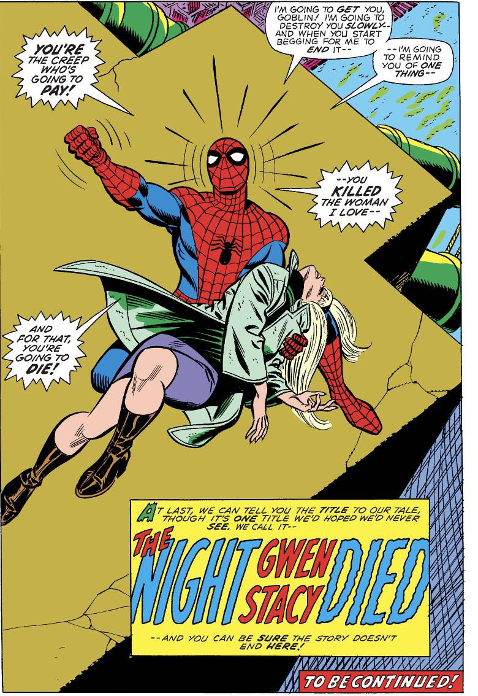

Losing Yourself
Peter Parker hunts down the Green Goblin and confronts him in what is one of the most iconic moments in the history of Marvel Comics. An intense battle eventually leads to the accidental death of Norman Osborn when he tries to kill Spider-Man with his goblin glider, but the flying machine ends up impaling him instead.
Peter's grief and guilt over the death of his love Gwen Stacy is an intense and emotional journey. At this point in his character development, he has lost three people that he was very close with, the first, of course, being Uncle Ben. In earlier issues of the comics, Peter actually also failed to save Gwen's father, Police Captain George Stacy after the Captain saved a child from being hit by falling debris—which was caused by a fight Spider-Man was involved in. And now, not only did he fail to save Gwen, but he actually caused her death. You see, when the Green Goblin hurled Gwen off of the Brooklyn Bridge in The Amazing Spider-Man, Volume 1, Issue #121, the fall was not what killed her. Gwen died due to Spider-Man using his webbing to catch her, when the extreme force of being stopped by the webline caused severe whiplash that snapped Gwen's neck. Naturally, Peter experienced insurmountable levels of grief after this incident, feeling as though he was to blame for her death. This guilt quickly turned into a blind rage against Norman Osborn, aka the Green Goblin. After effectively getting his revenge on the Green Goblin (though he didn't kill Norman himself), Spider-Man is left heartbroken and emotionally blunted.
A great example that shows how Peter Parker was affected by Gwen's death is a scene from the 2021 film Spider-Man: No Way Home. In the film, Tom Holland's Spider-Man joins forces with Andrew Garfield's and Tobey Maguire's versions of Spider-Man in an epic multiversal adventure. When Tom Holland's Peter Parker (aka "Peter 1") first meets his two multiversal counterparts, there's a scene where Andrew Garfield's Peter Parker (aka "Peter 3") explains the aftermath of Gwen's death and how it affected him. He says, "At a certain point, I just stopped pulling my punches. I got rageful. I got bitter." I think that this is an excellent representation of the intense emotions that Spider-Man experienced following one of the most character-defining moments in his entire history. Here is a link to a YouTube video of this scene from the movie. I have also included an in-browser viewing area for the clip. Skip to the 2:30 mark to hear the exact quote from Andrew Garfield.
Here is the viewing area for the movie clip from Spider-Man: No Way Home. (These clips aren't viewable within the tab because they contain copyrighted content, hence the Error 153).
Below is an image of the last panel of The Amazing Spider-Man, Volume 1, Issue #121, immedaitely following the death of Gwen Stacy. This quickly became one of the most famous comic book panels of all time following its release. It sets the tone for the next issue, as it carries an extremely heavy emotional weight with it.
